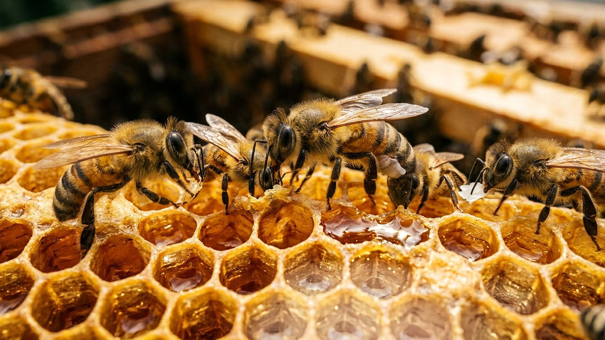

Aile VIII · Galerie 29 — Insectes et araignées
Fiche M111
Le rayon de miel et un théorème de deux mille ans
Abeille mellifère Apis mellifera
Etabli

La merveille
Trois parois de cire se rencontrent à angles égaux, et le fond de chaque alvéole est fait de trois losanges identiques. Ce dessin partage une surface en cellules d’aire égale avec le plus court périmètre possible. Les géomètres l’ont conjecturé dès l’Antiquité et n’ont su le démontrer qu’en 1999 ; les abeilles le bâtissent sans plan, à la température du couvain.
Comment ça marche
Chaque alvéole est un prisme hexagonal fermé par un fond à trois rhombes, et ce fond est mitoyen avec celui d’une alvéole de l’autre face du rayon : les deux nappes de cire se répondent exactement. Les ouvrières malaxent la cire avec les mandibules, les antennes et les pattes, et certaines la réchauffent en soufflant. Les caméras thermiques donnent de trente-trois à trente-huit degrés pendant l’édification. Ce chiffre compte : la cire ne se comporte comme un liquide capable de s’équilibrer spontanément en réseau hexagonal qu’au-delà de quarante degrés. La paroi n’est donc pas seulement tirée par la tension de surface — elle est posée, corrigée, amincie.
Trois chiffres, et ce qu’ils valent
3,722de périmètre par unité de surface
minimum démontré en 1999 pour tout partage du plan en cellules d’aire égale ; le carré demande 4 et le triangle équilatéral 4,559
0,35%
écart entre le fond à trois losanges des abeilles et la forme la plus économique calculée en 1964
33,6 à 37,6°C
température de la cire pendant la construction, sous le seuil de 40 °C supposé nécessaire à un équilibre liquide
Ce que l’homme en tire
Deux feuilles minces séparées par une âme alvéolaire donnent un panneau rigide et léger : c’est le nid d’abeille des aéronefs, des planchers et des emballages. La performance ne vient pas de la matière mais de la géométrie, ce qui permet d’alléger sans affaiblir. Des structures imprimées reprennent aujourd’hui le principe pour absorber les chocs, guider un flux d’air ou répartir la chaleur dans un échangeur.
INDUSTRIELmatériaux, transport
La question honnête
Le théorème parle d’un partage du plan en régions d’aire égale, minces et sans épaisseur. Un rayon réel est un empilement à deux faces, avec des alvéoles de tailles différentes pour les ouvrières, les mâles et le miel, et des parois qui ont une épaisseur. Le lien avec la ruche est donc réel mais partiel, et il ne prouve pas que la construction soit optimale. Sur la manière dont les hexagones apparaissent, les études se contredisent encore : écoulement de cire chaude pour les unes, façonnage direct pour les autres.
Réflexion
Ce que cela donne à penser
Qui a mesuré les eaux dans le creux de sa main, et pris les dimensions des cieux avec la mesure ?
« Qui a mesuré les eaux dans le creux de sa main, et pris les dimensions des cieux avec la mesure ? »
Ésaïe 40:12
Ceci est une inférence raisonnée, présentée comme telle : elle ne remplace aucun résultat scientifique.
Sources primaires
- Hales T. C. — The honeycomb conjecture, Discrete & Computational Geometry 25(1), 1-22, 2001. doi:10.1007/s004540010071
- Bauer D., Bienefeld K. — Hexagonal comb cells of honeybees are not produced via a liquid equilibrium process, Naturwissenschaften 100, 45-49, 2013. doi:10.1007/s00114-012-0992-3
Chaque chiffre de cette fiche est adossé à l’une de ces publications. Les valeurs retenues sont celles qui font consensus aujourd’hui ; celles qui ont été révisées sont signalées dans le texte.